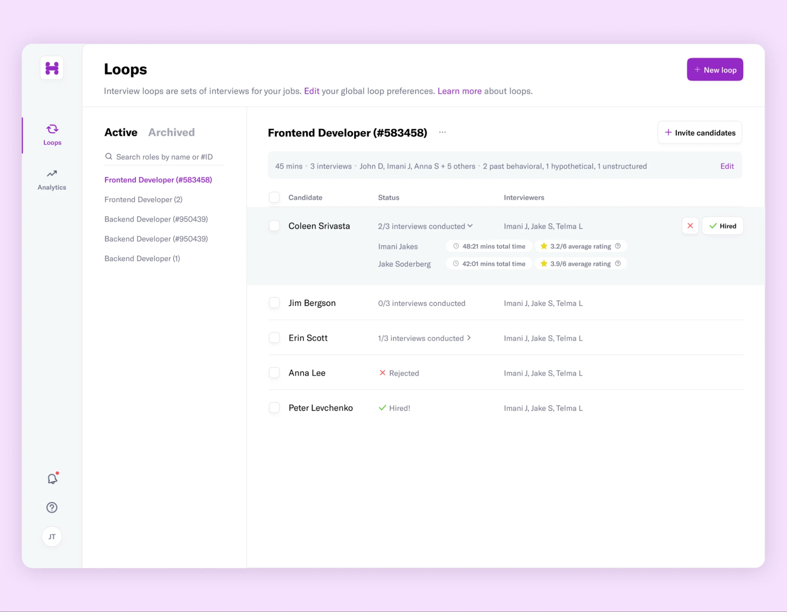
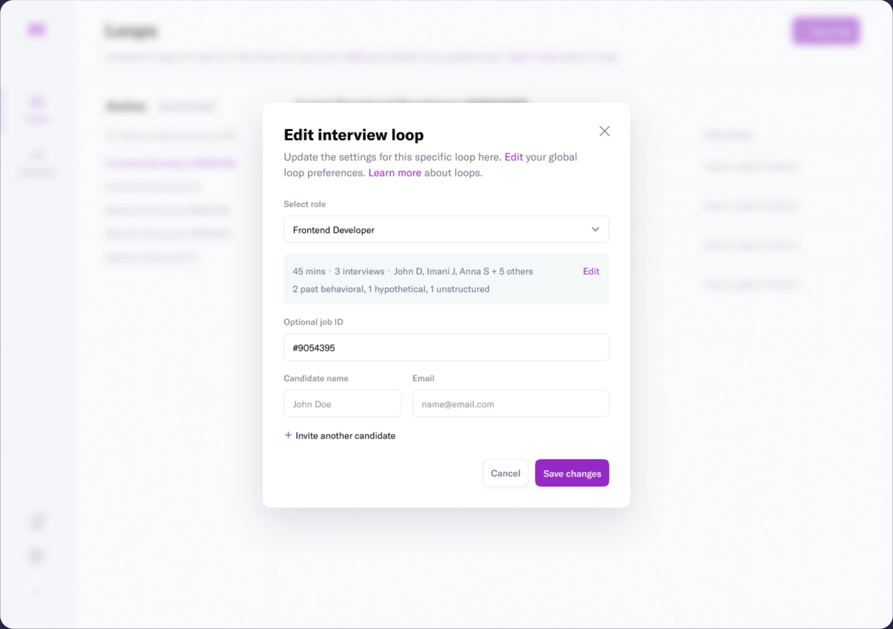
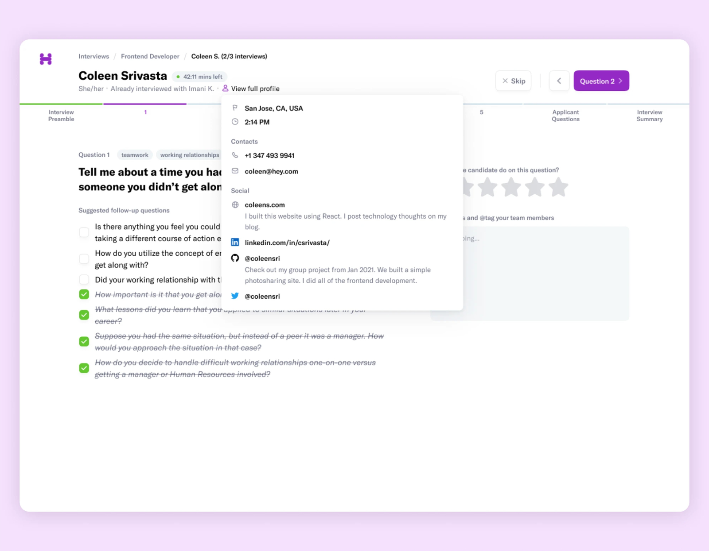
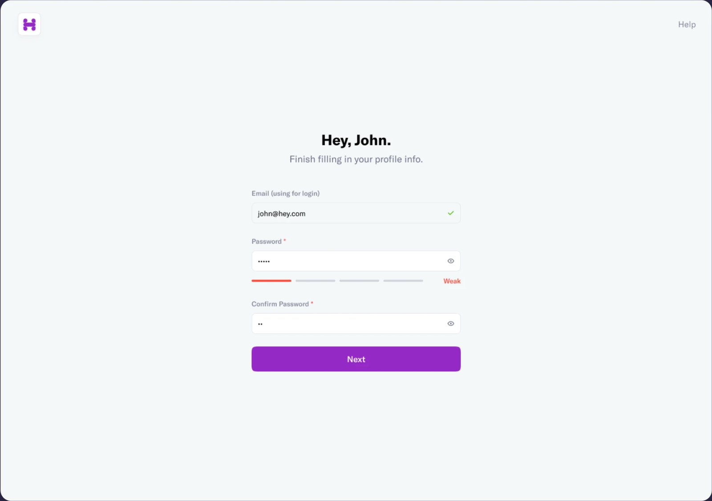

Hirement: interviews with a structure
Overview
Hirement helps employers run structured, customisable interview flows. A hiring flow is a set of rounds with tailored question types — checklists, ratings, open-ended — so different interviewers can evaluate the same candidate with notes and 1–5 star scores.
My role
Sole designer. Logo, design system, and the full product UI, working directly with the founder from an early idea.
Team
Timeline
2.5 months
via Toptal

The brief
Most small companies interview by vibe. Four people meet a candidate, each asks what they feel like asking, and the decision happens in a Slack thread. Hirement's founder wanted to give those teams structure without turning hiring into an HR system: define the loop once, and let every interviewer show up prepared and score the same things.
There was a clear idea and no product. In two and a half months I had to translate it into something a developer could build and a founder could demo.
The product
Loops
The home screen is a list of interview loops — one per role — with the candidates currently moving through each. A candidate row shows how many interviews are done, how long they took, and the average rating so far. Nothing to configure before it's useful.
Editing a loop
A loop is defined in one dialog: the role, the rounds (how many, who interviews, how long), the question mix, and an optional job ID. Changing the loop changes it for every future candidate; past interviews keep their structure.

The interview itself
During an interview the screen shows the candidate, the current question, suggested follow-ups, a notes field, and a star rating. A candidate card with contact details and links sits one click away. The interviewer can skip or move on without leaving the question — the point is to keep them talking to the candidate, not to the software.

Logo and system
I designed the "H" mark and a small design system around it: one purple accent, a lot of white space, a single type family, and a handful of components — inputs, tables, dialogs, rating stars. It emphasised clarity and spaciousness over cleverness, because the people using it are mid-interview and should not be thinking about the UI.

Outcome
The founder got a complete product vision in Figma — logo, system, and every screen of the core flow — in two and a half months, ready for development. Small scope, no hype: a hiring tool that made the interview, not the admin, the main event.
Screenshots are from a portfolio export; higher-resolution ones are on the way.